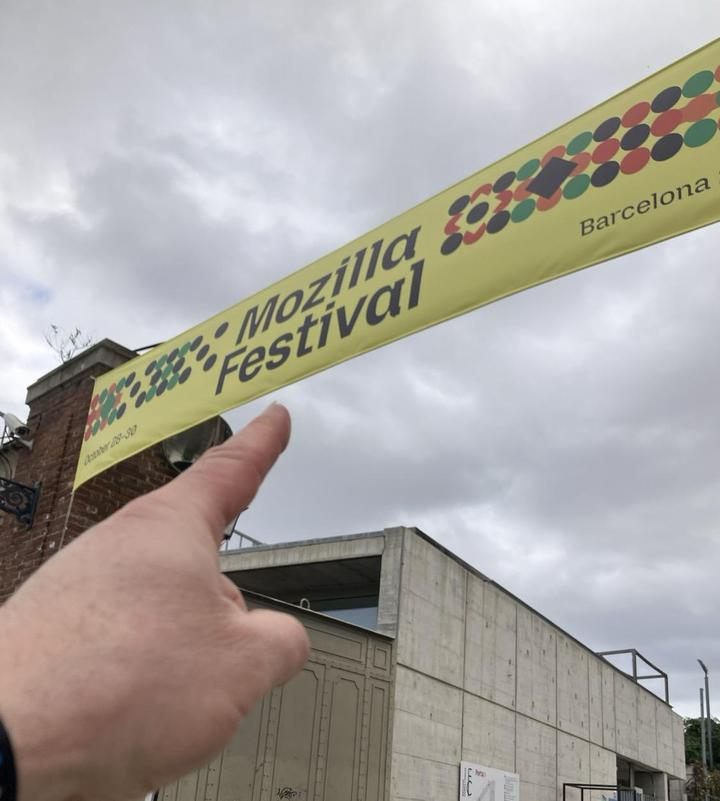

MozFest 2026
Human-Scale AI
5th November 2026

MozFest and me go back. Here’s a piece Michelle Thorne and I wrote in 2019 in the open book “How To Mozfest”. 2012-2019 were for me special years. It was where my research, teaching and practice grew and changed. It marked the transition from the techno-optimism of the 2000s to the techno-responsibilities that form the core of what I do now. While Big Tech was enshittifying, we were having joy! It was with this joy that I was after on my return last week.
I loved the Barcelona venue. Everything about it was perfect. I loved the people. The most diverse MozFest I’ve been to. I loved the area. Full of Catalonian life. Cafes. Chocolate shops. Bakeries. Dotted around orange tree lined lanes. When work feels like a holiday. That’s when work is working.

I was part of a session invited by Mehan Jayasuriya to explore Wilding AI For People And Planet. After a short intro (based on my Small Talk post) we dived into breakout groups. My theme was Tiny. It was rammed! I thought maybe 30 people would come to the session and we’d break out to maybe 10… there were at least 30 in our breakout. With about 15 mins to explore. What I found interesting is the challenge of Tiny being a radical break away from Large Language Models. Tiny LLMs don’t work. Yet the tension of wanting the same narrative in a more healthy way was a running thread. It shows just how much our thinking is now heavily engrained into this new model - the global reinforcement learning of LLMs as AI demonstrates just how powerful Big Tech is. Yes LLMs are powerful. Yes LLMs are AI. But AI isn’t an LLM. It’s still there to be defined. But thankfully we were not confined to this path.
Reconsidering other models
“Don’t forget what 70 years of machine learning have taught us!” called out one participant. While what we see in LLMs is based on the 2017 Transformer architecture. Something that’s been on my mind for a while now and something I will return to. Some of the network architectures I am thinking of revisiting - and (hoping) to test for viability for training on a Pi or perhaps even an ESP32.
1986 Back Propagation neural network
1989 Convolutional Neural Network
2014 Deep Learning
2017 Transformer
Which is making me think I should revisit my history of Neural Networks… a couple of sidebars here…
And while I’m thinking about going back to re-explore other neural network models, it would be silly not to think about the work I did on my PhD.
But wait… let’s get back to the session…
AI isn’t just use! It’s training.
Going back to the roots of neural networks in this way was part of a thread we pulled in our session on widening the conversation of AI to the training of models. For me, training of AI is where we need to be focussing. It is the foundation. The compost. The nursery ground. It is where we should be throwing our weight into. The majority of people will never experience training a neural network - despite the likelihood they are part of the data extraction machine that is harvesting every possible thing in their lives to feed the algorithmic training. That should terrify everyone. It’s like second hand smoke, but where the smoke is odour- and colourless. It was good to hear a discussion on how we can bring joy to the training process and make the labour of training more like the labour of community care groups - e.g. allotments (community gardens), museum curation, librarians, fitness groups. All these involve work, but the work is fun. We choose to do it in care of our neighbourhoods and in care of ourselves. But interestingly, this view wasn’t uniform. One member of the group called for us “to stop fetishizing training”. All the data had already been trained. All the models had been made. It was a waste of time to redo this. The approach behind this thinking is to use Retrieval-Augmented Generation where the trained LLM can be retrained by accessing further information - e.g. from the web. A bit like how you can have open book exams - where you can use your own intelligence and knowledge to further support it. A lot of comments in the breakout were around - yeah, just RAG your model in a new context. This is all well and good and I get it, it’s needed by communities who are locked out by the pricing of Claude, GPT etc. Open models offer LLM power, but in a more accessible way. Yes do this. But it is not changing the narrative. It is not wilding AI, it is simply making variants of the monoculture cash crops that Big Tech is proliferating the soil of the internet with.
To wild AI we need to go back to the compost heap. To add new ingredients. This means moving away from any kind of LLM and going into new territories, perhaps by going back a few steps before we move on.